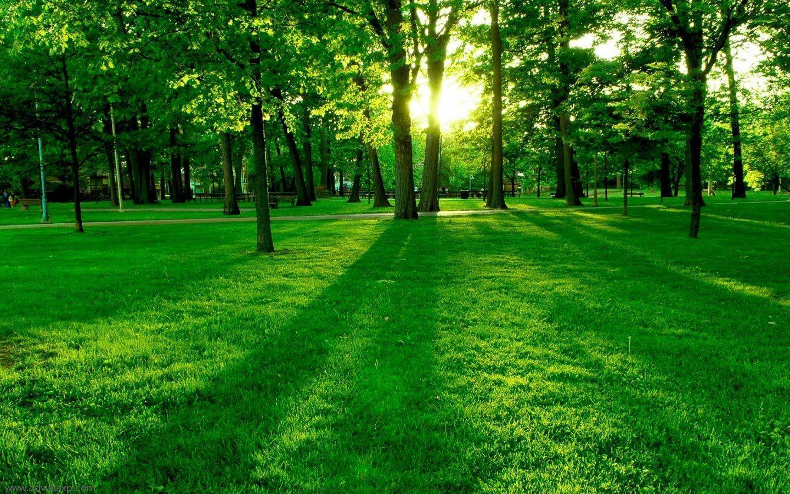

What is Village ?
A village is a clustered human settlement or community, larger than a
hamlet but smaller than a town (although the word is often used to describe both hamlets and
smaller towns), with a population typically ranging from a few hundred to a few thousand. Though
villages are often located in rural areas, the term urban village is also applied to certain
urban neighborhoods.

Location and Nature
Ghumeshwar vilage is located in district raigad. Village air is cold
in night-time. That Fog during morning makes me happy and confident. That river makes us to
swim. that birds sound is so amazing. that green environment during rainy season makes mind
silent

Speciality of this Village
As the car turns to take the muddy road, I can feel the freshness in the air. The road that leads to the village has big trees on either side and they are so full of life as if they are dancing with joy to welcome us to their village. I have never seen such a breathtaking scene. There is one temple in the village and daily one or the other festivals keep going on. There is a river near the temple. There are mango trees, Bengal currant( karvanda) trees, and a big Garcinia indica( Kokum ) tree around the river. The smell of the flowers and mango buds attract everyone’s attention.